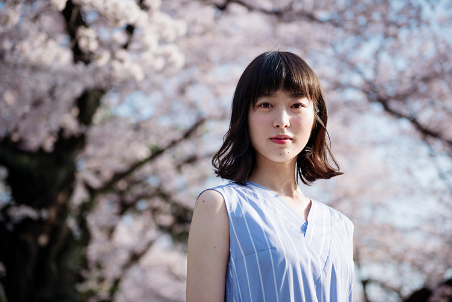
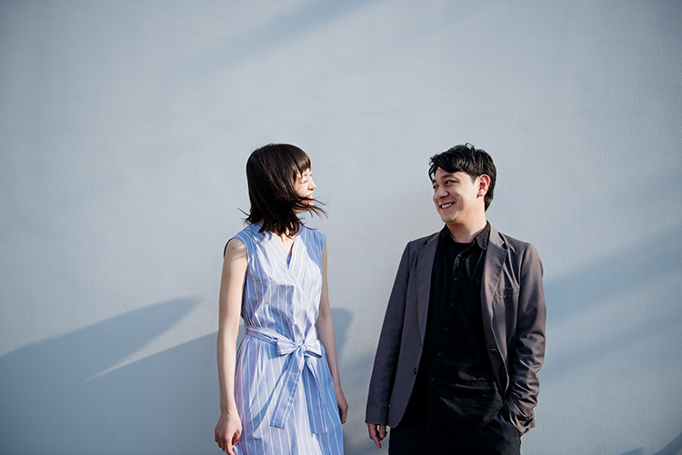
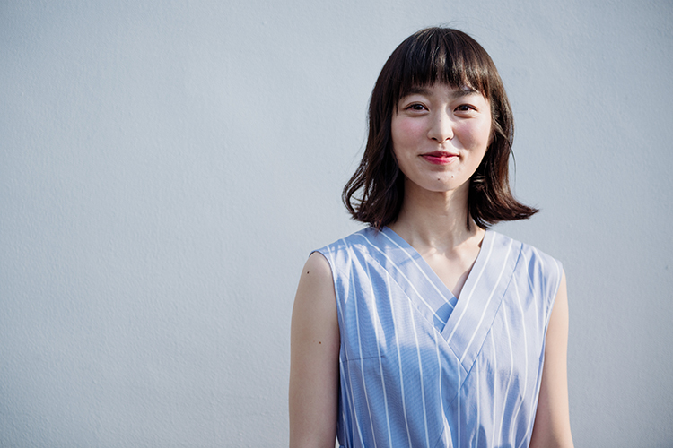

モスクワ国際映画祭にて２冠（国際映画批評家連盟賞＆ロシア映画批評家連盟特別表彰）に輝いた中川龍太郎監督の新作『四月の永い夢』が５月１２日より公開される。恋人を亡くして以来、静かな生活を送る一人の女性が喪失感から解放されていくまでの日々の揺らぎを丹精に紡ぐこの映画は、監督自身が直面した親友の死という実体験を下地としている点で前作『走れ、絶望に追いつかれない速さで』（2015）に続くものだが、物語の視点を残された恋人という立場に置くことで、人生の大事なエッセンスを大仰ではなく、慎ましい歩幅で描くことに成功している。今作のキャスティングの大きな導きとなったというその声の魅力と実在感を湛える佇まいによって、主人公の滝本初海を瑞々しく演じる女優、朝倉あきと中川監督の２人に話を聞いた。
初海の周りにあるフワッとした膜みたいなものがどう揺れるかを撮りたい。その膜をどう出していくか、という話をしたんです。（中川）
本作のテーマの一つに中川監督が「声」を挙げられていて、その視点が独特で興味深かったんですが、朝倉さんの配役に一層、納得させられました。
中川：
高畑勲監督の映画『かぐや姫の物語』で朝倉さんの声に初めて触れたんですけど、朝倉さんに対して「わがままな声をしている」と表現した高畑監督のその言葉に僕はまず感動したんです。声って見た目よりも人間性を捏造することが難しい。内臓を通って出てくるものだから、ファッションやお化粧などでは変えられないので。怒鳴って威圧したり、媚びて気を引こうとしたり、人間は状況に応じて声で相手の感情を調整しようとすると思うのですが、朝倉さんの声はそういうことをしようがない。頑固な声なんです。劇中に「初海さんは愛想笑いができない顔だと思います」って台詞があって、朝倉さんの声にもまさにそういう魅力があるんです。
この滝本初海という役は、朝倉さんに当てて書かれたんですね。
中川：
当ててます。朝倉さんじゃなかったらこの映画を撮っていたかも分からないです。朝倉さんありきで作った映画ですね。
朝倉：
大変恐縮です…。背筋の伸びる思いです。今でこそ光栄で嬉しいんですけど、最初にお会いした時に、私の声についてそう話して頂いた時は身が引き締まりました。
台本を初めて読んだ時に、初海という女性にどのような印象を持ちました？
朝倉：
私に当てて頂いたとのことでしたけど、自分のあまり見たくない部分まで描かれている気がして、最初に読んだ時はドキドキと戸惑いで。これをこのままやっていいんだろうか、どう芝居したらいいんだろうって。
中川：
狂気的だったり著しく反社会的だったりする役を演じたがる俳優さんがいますが、それは自分とは違うものの方が想像しやすいし、自分を隠してできる部分もあるからじゃないかと思います。自分に近いキャラクターを演じることは実は難しい。自分自身とキャラクターの間で、どこまで演じるのかの線引きが難しいからです。そういう面で、初海役は大変だったと思いますが、見事に取捨選択しながらやってくれました。
朝倉：
初海のバックボーンについてたくさん話し合いをしましたね。３年前に初海に何があって、この３年間をどう過ごしたのか、恋人だった憲太郎さんはどういう人だったのか、そういうことについて。この作品の登場人物は、気持ちの全てが台詞で表されるというわけではないので、私からは初海の過去についてお訊きしたんです。
中川：
この映画の前に、一緒にMV（Die By Forty「Ames Sœurs」）を撮っていて、主人公を朝倉さんに演じてもらっているんです。前日談ということではなかったんですけど、死んでしまった恋人が残した映像を振り返るという設定の話だったので、あれを作ったことで感覚を掴めたような気がします。
朝倉：
そうでしたね。
中川：
あと、そうだ。膜を撮りたいみたいな話をしたかもしれない。初海の周りにあるフワッとした膜みたいなものがどう揺れるかを撮りたい。その膜をどう出していくか、という話をしたんです。
「膜」というのは、とても詩的な言い回しで、中川監督らしい演出ですが、朝倉さんはそれをどう捉えましたか？
朝倉：
最初は「膜！？」って（笑）膜ってどんな感じかなって…。
中川：
確かに（笑）
朝倉：
中川監督は人をよく見て言葉を選ばれる方なので、膜という表現は私に合わせてのことだと思うんです。感覚を共有しようとして下さるので、その感覚をとにかく掴もうって思いました。
中川：
朝倉さん自身が自分の言葉を持っている方なので、抽象的な言葉でもそこからインスピレーションを得て、自分なりの解釈を立ち上げてくれると感じていました。役者さんによって、動線や仕草を通して具体的にコンセプトを共有した方がいい場合もあるでしょうが、朝倉さんは抽象的な言葉の共有で膨らませてもらえる部分を見てみたかったです。
朝倉：
どこまでそれに応えられていたかは分からないんですけど、役者としてはとても居心地良かったです。
中川：
前作（『走れ、絶望に追いつかれない速さで』）を一緒に作った太賀は、自分が思い浮かべていたものを上回る瞬間がたびたびありました。今回はそういう感じとは違って、ある一つの高みを一緒に探りながら表現していくイメージで、そういう方法に初めて挑戦できた気がします。これは今話していて思ったことなのですが、それが今までの役者さん方とのコミュニケーションとは違うところだった気がします。その過程でお互い苦労はあったと思いますが、目指すところに最初からあまりズレなかったのではないでしょうか。
前作同様、監督自身が直面された体験が創作の下地となっているそうですが、今作はその実体験に対して俯瞰した構えの映画になっていると感じました。
中川：
前作は自分の感情をどうやってぶつけるかを考えて率直に作った作品でした。今回はいかに朝倉さんの素材としての魅力を生かすかを考えていった結果として、自己が持っていたモチーフが自然と入ってきた。順序が違ったので、モチーフは近くても若干の客観性を得たのかもしれないですね。

登場するキャラクターそれぞれの後ろにある物語がちゃんと透けて見える。中川監督のそういう人物描写がすごく好きなんです。（朝倉）
具体的にシーンについても伺いたいのですが、初海と志熊（三浦貴大）が、工場で手ぬぐいに囲まれながら２人で話すシーンは、美術も含め、鮮やかな印象が残りました。
中川：
かなり深夜の撮影だったんですよね。
朝倉：
現場は素敵な場所で、撮影期間は夏で暑かったんですけど、そこだけに心地のいい風が吹いているのを感じられて、この空気感がそのまま映像になるのかと思うとゾクゾクしました。手ぬぐいがすごく綺麗で。
中川：
手ぬぐいは結構な枚数を工場の方が揃えてくださりました。実際に吊るされた光景を見たときは改めて気持ちが高まりました。自分はロケハンで何度か行っていましたが、朝倉さんは撮影の時に初めて見たんですよね？
朝倉：
はい、あの日が初めてでした。とにかくこの美しさを壊さないように出来たらって強く思いました。初海は心から楽しんでいたと思います。
志熊との距離が少し縮まった場面にも見えます。ここに至るまでに初海は志熊に対して、特別な思いを抱き始めていたと思いますか？
朝倉：
居心地の良さを感じてはいますけど、それだけっていう可能性も高いです。
中川：
なるほど。
朝倉：
この時、彼女は誰に対しても壁を作っている時期だったと思うんです。あの場面では少なくともこの人は大丈夫と思ったんじゃないかな。かといってスムーズに気持ちが育まれないのがその時の初海なので。

夜道を一人で歩く長回しのワンカットで、初海の気持ちの起伏が巧みに切り取られます。このシーンのアイデアは素晴らしいですね。
中川：
あそこで走らないのが初海なんだよっていう話をしましたよね。
朝倉：
そうでしたね。撮影前はもう少し動きがつくと思っていました。
中川：
脚本ではもっと走るイメージがあって、朝倉さんもそう思っていたとのことでしたが、現場で抑制していく方向になっていったんですよね。
朝倉：
本当に難しかったです。脚本に書かれていることを読み返せば読み返すほど分からなくなってしまって。工場のシーンから、１人で歩くシーンまでの心情について何度も考えました。
中川：
あの時の初海はどういう気持ちで歩き出したんですか？
朝倉：
え、私に聞くんですか？（笑）
中川：
初海は、あの日自体が楽しかったわけですよね。
朝倉：
そう、そうですね。
中川：
久々に外の人とのコミュニケーションがあっての高揚感というのは、必ずしも志熊だけに向かうものではないと思うんだけど、あれはどういう気持ちだったんだろう…。
脚本を中川監督が書かれて、朝倉さんが演じられたわけですけど、その２人が初海の心情について明言できないくらい、言葉で表せないものが映し出されているとても映画的でエモーショナルなシーンだと思います。
朝倉：
あらためて試写で観た時には、こういうカットを考えて、こういうシーンをつくる中川さんは本当にすごいなって思いました。
中川：
事前に話し合いはしていましたが、細かな動きに関しては基本的に朝倉さんの創作です。４テイクあって、使っているのはNGだったテイク２でした。技術部の方のNGだったのですが、あのテイクが後ろで見ていてゾワっとした。朝倉さんが一箇所だけ、ポールを避けて動くところが官能的というのか。裾のほつれ感も彼女の感情と繋がっている気がします。かなり迷いましたが。
救いを求める楓（川崎ゆり子）に呼び出された初海がマンションに駆けつけるまでの一連のシーンも独特のリアリティがありました。
朝倉：
中川監督の視点で面白いと思ったのは、初海が一度、訪れる部屋を間違えるところなんです。間違えた部屋に住む夫婦が普通じゃない様子に勘付いて、関わってくれる。本編ではカットになっているんですけど、あのシーンには続きがあって、奥さんが楓の彼に向けて言う台詞もあったんです。あの場面に居なくてもいいはずの夫婦ですけど、そうやって登場するキャラクターそれぞれの後ろにある物語がちゃんと透けて見える。中川監督のそういう人物描写が私はすごく好きなんです。
中川：
初海は他人のいない世界にずっと住んできて、そこから一歩踏み出す物語ですから、踏み出す意味合いのある場面では背景となる人物を出そうと思ったのかもしれません。
モスクワ国際映画祭での「人生の大事なエッセンスを伝えている作品」という作品評がとても腑に落ちました。この映画で描かれるのは、経済的な豊かさを人生のゴールとしない価値観を持った人達です。そこにはどのような意図があったんでしょうか？
中川：
自分も朝倉さんも９０年代の生まれですが、日本が経済的に発展したり、国際的なプレゼンスが高まったりする時代を知らず、社会が上昇していくという状態に実感を持つことなく育ってきました。だからこそ、新しい幸せの在り方をどのように発見していくかを問われている世代でもあると思います。手ぬぐいのように機能性を伴った美しいものを再発見することもそうですが、古いものを新しく生かすことで、生活を丁寧にしていこうという心がけ自体が大切だと感じています。
朝倉：
初海は情緒に目を向ける余裕がなさそうにも思えるんですけど、肌触りのいい古風な物に囲まれた部屋に住んでいますよね。利便性を求めない。
中川：
狭いけど、強い美意識を初海は持っています。美意識は強ければ強いほど狭く、内向していく危険性も孕んでいます。そこをどう抜けるかもまた僕たちの世代に問いかけられたテーマだと感じています。

最後に。初海はあらためて憲太郎の死と向き合っていきますが、初海にとっての憲太郎とは、どのような存在だったと思いますか？
中川：
それは僕も朝倉さんに聞いてみたい。劇中で憲太郎のことは描かれませんが、恋愛感情はそれなりにあったのでしょうか？
朝倉：
う〜ん、あったと思います。
中川：
じゃあ、憲太郎を引きずっている面はあったんだ……。僕が聞くのも妙な話ですが（笑）
朝倉：
そうですよ、監督！ どうして演じた私に答えさせるんですか（笑）
中川：
すみません、初海さんと憲太郎との関係はどのようなものだったのか、スタッフもこっそりいろいろと憶測を出していたので、御本人に聞いてみたくなりました（笑）